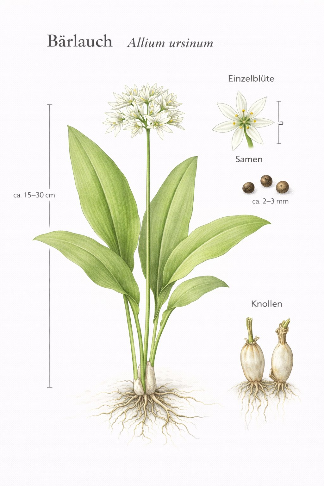

Nr. 4 · Frühblüher im Wald
Bärlauch
Allium ursinum
Der wilde Verwandte des Knoblauchs – lokal massenhaft und ökologisch bedeutsam.

Tödliche Verwechslung – Vorsicht!
Bärlauch-Vergiftungen passieren jedes Jahr. Die jungen Blätter ähneln Maiglöckchen (giftig!) und Herbstzeitlose (tödlich!). Der entscheidende Test: Blatt zwischen den Fingern zerreiben. Riecht es nach Knoblauch? Bärlauch. Kein Geruch? Hände weg! Diesen Test sollte man wirklich kennen, bevor man Bärlauch sammelt.
Warum fressen Bären Bärlauch?
Der Name ist kein Zufall: Braunbären fressen im Frühjahr tatsächlich grosse Mengen Bärlauch, um nach dem Winterschlaf den Körper zu reinigen und die Verdauung anzuregen. Dieselbe Idee steckt hinter der menschlichen Frühjahrskur mit Bärlauch – eine alte Weisheit, die Bären und Menschen teilen.
Wissenswertes & Merksätze
Geruchstest
Das einzig sichere Unterscheidungsmerkmal zum Maiglöckchen! Blatt zerreiben – Knoblauchgeruch = Bärlauch. Kein Geruch = gefährlich! Nie blind nach Geruch pflücken, da die Hände schon kontaminiert sein können.
Massenphänomen
An manchen Standorten bedeckt Bärlauch den gesamten Waldboden – ein Zeichen für nährstoffreiche, frische Böden und ungestörte Wasserführung. "Ursinum" = Bär:In vielen europäischen Sprachen heisst Bärlauch ‚Bärenkraut' – ein Hinweis auf die alte Beobachtung, dass Bären die Pflanze gezielt fressen.